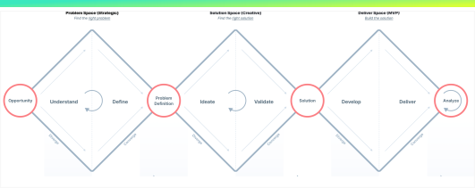

New York, United States (remote)
GameChanger provides mobile and web platforms for live scoring, stats, and streaming in youth sports. I collaborated with the Volleyball team to enhance its success.
GC's design team follows the Triple Diamond process—Discover, Define, Develop & Deliver, and Impact—to ensure continuous improvement through research, refinement, and real-world feedback.
I aimed to improve the discoverability of the Film Room feature for volleyball teams by incorporating UI elements like banners and widgets.

It all started as a UI exploration to boost discoverability for the newly launched Film Room feature, designed for volleyball staff to analyze footage, highlight key moments, and share them. By focusing on small UI elements like banners and tooltips, we aimed to address the challenge of the feature being buried under multiple tabs and content.
This page, linked to a team's event or game with a specific opponent (e.g., Rangeview Rangers), hosts full event videos and clips from that game. These videos can be opened directly in the Film Room.

This screen is from the teams homepage where each of the videos can be clicked on and opened in Film Room.


These are some explorations I did to visualize how the banner might look.

The first banner design was chosen for its simplicity and because it was a component that could be built easily by modifying an existing design system component


We chose a simple, dismissable blue banner from existing design components to highlight the Film Room feature with minimal development effort. Additionally, we added a red dot to the video tab for greater visibility. To validate these choices, we conducted a usability test to address key learning goals.
1. Discoverability: Understand how coaches discover the Film Room on the team’s page and whether its placement aligns with their expectations. Where do they look first?
2. Intuitiveness: Assess if the design and placement of the video tab naturally draw coaches’ attention, and whether they can easily find and use the Film Room.
3. Navigation: Track the pathways coaches take to access the Film Room and identify any usability issues, such as unclear labels or hidden options.
4. Interaction: Determine if coaches understand how to access the Film Room by interacting with the video archive tiles without additional labels.
5. Satisfaction: Measure coaches' satisfaction with the ease of discovering and using the Film Room within the app (Score out of 5).
To understand the necessity of this project, we reviewed GameChanger’s Q3 2024 business and user goals. As volleyball is an emerging sport, increasing visibility of our latest features is crucial to driving adoption and providing greater value to users.
1/4th of VB teams with video conduct a valuable film room session (defined as more than 1 moment created).
1/5th of VB staff sharing moments, of all staff creating moments.
Observability added to 100% of A-Team owned critical paths.
4x YoY user growth in 2025
To make entry into film room as seamless and intuitive as possible. Have multiple entry points into film room to facilitate easy access and analysis.
The bottom line is that if more users discover Film Room and find value in it, it enhances the overall value proposition of our volleyball product. This means that if marketed correctly, we will have an increase in revenue which in-turn pushes the top line of the company higher.
Unmoderated usability test
11-16U volleyball coaches
Ages 35-50
Sourced from Userbrain
Targeting the aforementioned segment aligns with their need for an all-in-one video solution, enhancing team performance and our competitive edge.
We’re improving Film Room’s discoverability within the current IA through usability testing. Based on findings, we may explore IA changes or follow up with an in-app A/B test.
I set up a usability test on the user brain platform in accordance with the screening criteria we had for participants.
This usability test evaluated how easily youth volleyball coaches could navigate the GameChanger app to find and use the game footage analysis feature.
Discoverability 3.8/5
If we define entry into film room as a success, then 3/5 users were able to quickly and successfully find it. We should focus on directing users to the correct tab and then encourage them to click on the correct tile using UI elements.
The video tab on the team home page, marked by a red dot and banner, effectively drew attention as the main entry point. Although the Beta tag was well-placed, additional information could be helpful. Users suggested making the video tab the default, but further research was needed.
• Explore alternative Beta badge placements, add a blue banner directing users to the video tab, note existing footage or upload instructions on the info page, and conduct a Kubit analysis to justify setting the video tab as default.
• Future improvements: link play-by-play events to Film Room with short clips for marking and add video status to the schedule tile.
One thing that was made really apparent from this test was that there is a need for an easier and faster entry point into film room. After some brainstorming, we came to the realization the best way to do this would be through a widget on the home screen, which can take coaches and staff directly into film room shortly after a game has ended. I started doing some explorations for the same.

Who captures video, and how does camera placement impact the quality of insights?
coaches creating clips or assigning timestamps, and which moments are prioritized as coachable?
How are scores and plays noted during analysis, and what tools and devices are commonly used?
When do coaches typically analyze footage?
How are insights shared, and what specific improvements do coaches see as a result of game analysis?
To answer these research questions, we will send out a survey to GameChanger volleyball staff that have been active in the last 12 months. In 12 months its very likely that the coach/staff have seen periods of competitive play, off season, practice and preparation.
• Survey Length: 36 Questions
• Time: Approximately 10 minutes

To implement insights from this survey, such as:
• The home screen widget understand how it's placement, timing and copy can allow for 1 click access to Film Room.
• Making sure film room works seamlessly across the entire gamut of devices.
• Seamless sharing between coaches, staff, and players.
• Tagging and filtering of plays.
• Keep Film Room accessible on the home screen for 48+ hours post-game to encourage timely reviews.
• Optimize Film Room layouts for landscape orientation on larger screens (TVs, tablets, laptops).
• Provide a quick onboarding tutorial covering tagging, filtering, and annotation tools.
• Enable efficient tagging and filtering for points won/lost, player actions, top plays, and key errors.
• Leverage computer vision to auto-highlight key plays and errors for streamlined analysis.
There is additional need to improve discoverability (scored 3.8/5), and this can be improved with UI elements to guide users to Film Room.
The home screen widget takes this a step further as it is likely to be the first thing the user sees when they open the app.
The survey told us 54.3% of coaches review footage within 1-3 days and 28.6% within 24 hours of a game.
Having established from our survey that another quick and effective entry point into film room is required for staff members on GameChanger teams. We now needed to do an unmoderated usability test test with our home screen widget designs.
Clearly Conveys Key Details
The CTA, score, thumbnail, and marked moments count.
Design System Alignment
Aligns with the existing game widget in our design system and builds on past success with home screen widgets.
Past data shows that the game widget effectively introduces new users to scorekeeping, with nearly 25% of users engaging with this feature for the first time.
There is a high return rate among new scorers, who average nearly two games each , indicates strong initial engagement.
Additionally, a steady weekly influx of new scorers (8-20%) suggests that the widget consistently attracts and retains new users, potentially building a sustainable base of regular scorekeepers over time.
Intuitiveness
• How easily users notice and recognize the widget on the home screen.
• If users understand the widget's purpose and its connection to Film Room.
• If the visual design, UI elements, contextual cues and copy of the widget helps users understand what it does and encourage them to click on it.
Link to Film Room discoverability
• If users understand where the widget took them once they are in Film Room or the video tab.
• If users recognize alternative paths to the Film Room but find the game widget to be the most effective entry point.
5 users, sourced from Userbrain
• Non-GameChanger users.
• Volleyball coaches for the age group of 11-16.
• Between the ages of 35-50.
• Based in the US.
• Device: Computer or Desktop only.
Discoverability 5/5
The Film Room widget is well-placed, attention-grabbing, and meets user expectations, making the test a success. The CTA copy and UI elements are effective, but other entry points need clearer highlighting for better discoverability.
Users found the "Analyze in Film Room" button intuitive and well-placed, with clear language enhancing feature understanding. While they expected automated insights, they appreciated the manual playback tools. The home screen widget and video thumbnail were easy to find, though some struggled with other entry points.
• Maintain the clear, action-oriented language around the CTA across all Film Room touchpoints.
• Adjust the widget timing to 48 hours post-game, aligning with coaches' typical review period of 1-3 days.
• Additionally, implement quick onboarding or tooltips for first-time users to help them navigate and utilize all available features effectively.
• Video and analysis tools are essential for revenue growth in GameChanger's volleyball sector.
• Users need efficient tools for quick footage breakdowns.
• Highlighting the video feature and encouraging uploads as soon as content is available is crucial.
• Easy discoverability and usability enable coaches to share insights and apply research for team performance improvement.
• This project highlighted the value of adapting research and design to tackle specific challenges.
• I learned how to integrate new research insights into existing designs effectively.
• Setting ongoing learning goals proved essential for deepening user understanding and delivering optimal solutions—key to my role as a product designer.
As mentioned briefly in the case, study above, there are several next steps which the product would benefit from such as full implementation of the film room widget with the 48 hour timer post each streamed game.
Optimizing all entry points to Film Room.
• Quick tutorial within video tabs for new users.
• Bringing Film Room to Web, and larger devices, with full functionality and ease of use.
• Utilizing Computer Vision(CV) to automatically highlight key, coachable moments to coaches, staff and players.
If you are interested in discussing this case study further You can contact me at
madhav18897@utexas.edu
@all rights reserved